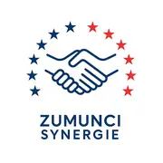

Solidarity · Education · Cooperation
Community engagement
Alongside my teaching and research, I am involved in community initiatives focused on education, solidarity and supporting young people. These commitments reflect my desire to contribute to socially meaningful projects beyond the university.
Principal commitment · Since 2026
ZUMUNCI SYNERGIE
Secretary-General · Non-profit association

ZUMUNCI SYNERGIE brings together 15 founding members around a shared ambition: to promote education, entrepreneurship, economic and social development, solidarity and international cooperation.
As Secretary-General, I take part in this collective initiative and in developing an association project intended to support communities in need, particularly in Niger.
Social initiative · In preparation
Supporting access to education in Niger
Our priority project aims to support schooling and educational opportunities for children from disadvantaged families in Niger. Its objective is to help address the material and social barriers that can undermine access to education and school continuity.
This initiative is still in preparation; it is an association-led objective, not an already completed programme. Implementation details and partnerships will be specified as the project develops.
Education
Place access to learning and school success at the centre of the initiative.
Solidarity
Focus on children whose families have limited resources.
Cooperation
Gradually develop collective support around the project.
Other commitments
Secretary-General — Association of Nigerien Students in Besançon
Helped welcome and guide newly arrived Nigerien students, including university administrative procedures, housing, residence permits and settling in Besançon.
Doctoral students' representative on the CRESE Council
Representation of doctoral students in the collective governance of the Centre de recherche sur les stratégies économiques at Université Marie et Louis Pasteur.
Get in touch
If you would like to discuss these community initiatives, feel free to contact me directly.
This page presents my personal involvement and ZUMUNCI SYNERGIE's developing project. It is not the association's official institutional website. No donations are solicited here.